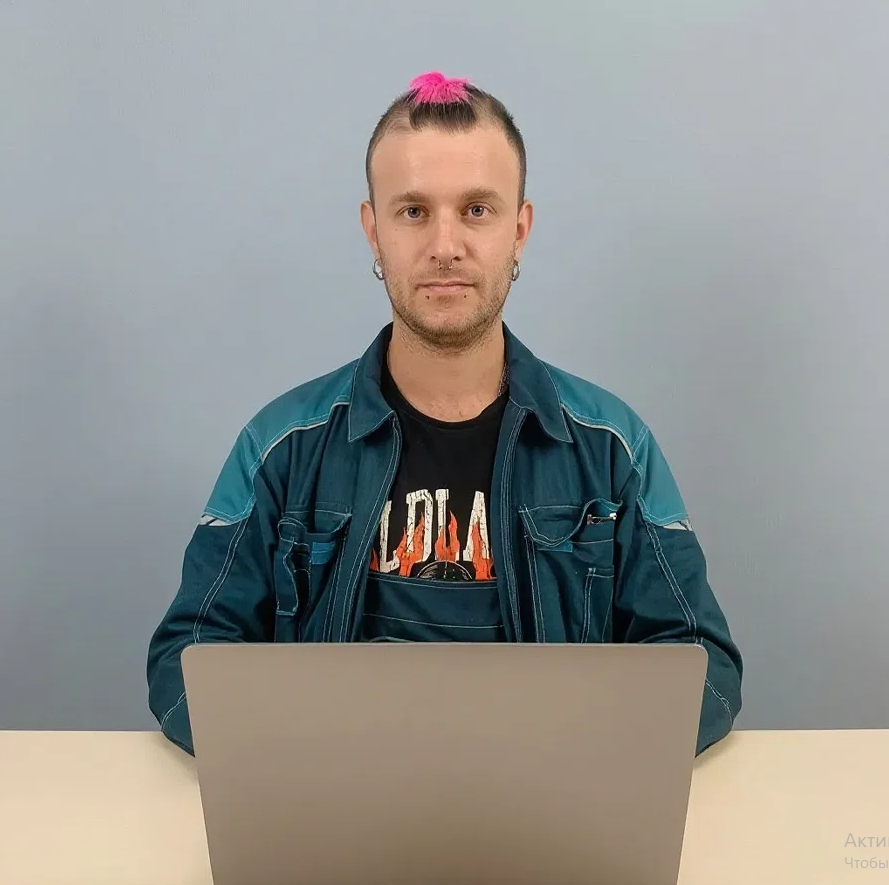
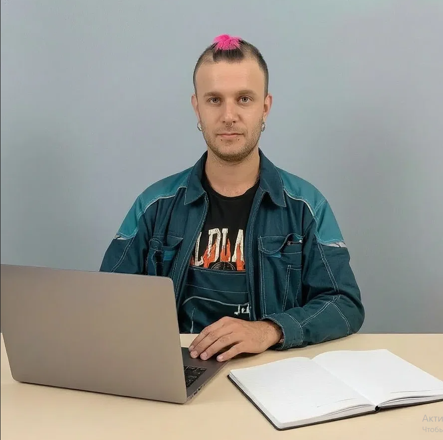
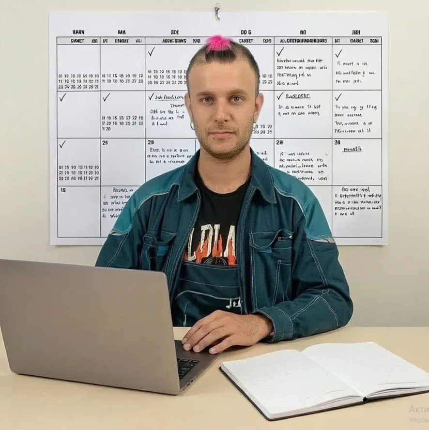
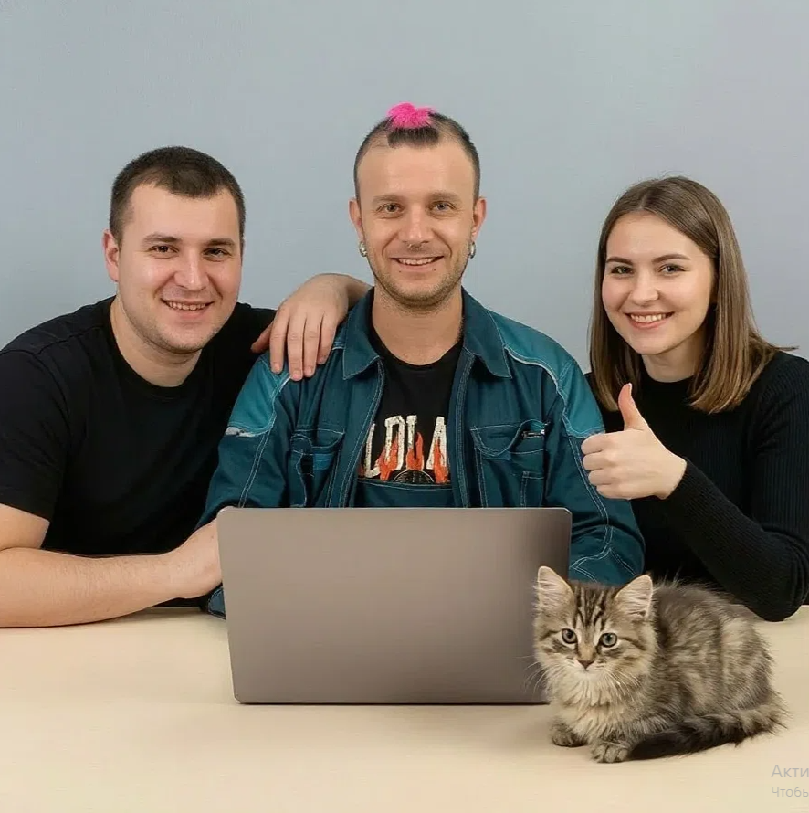
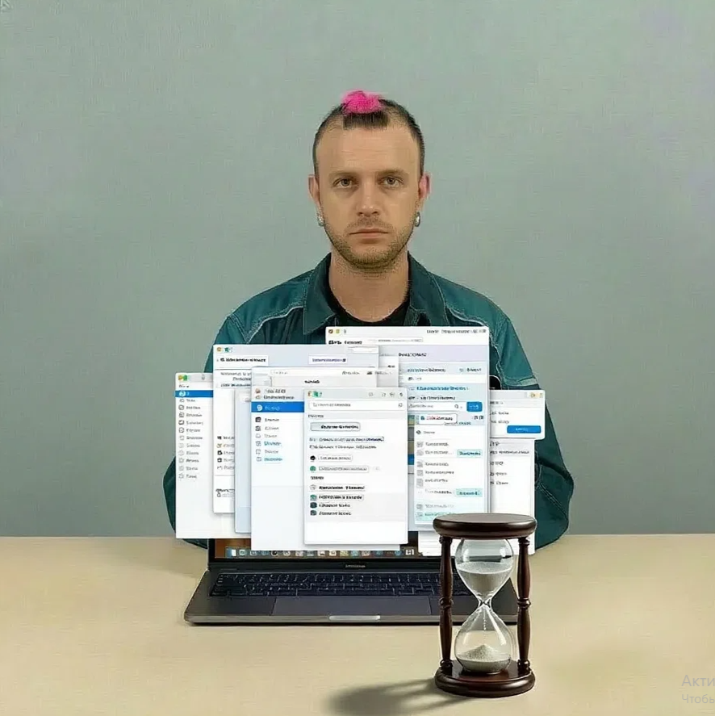
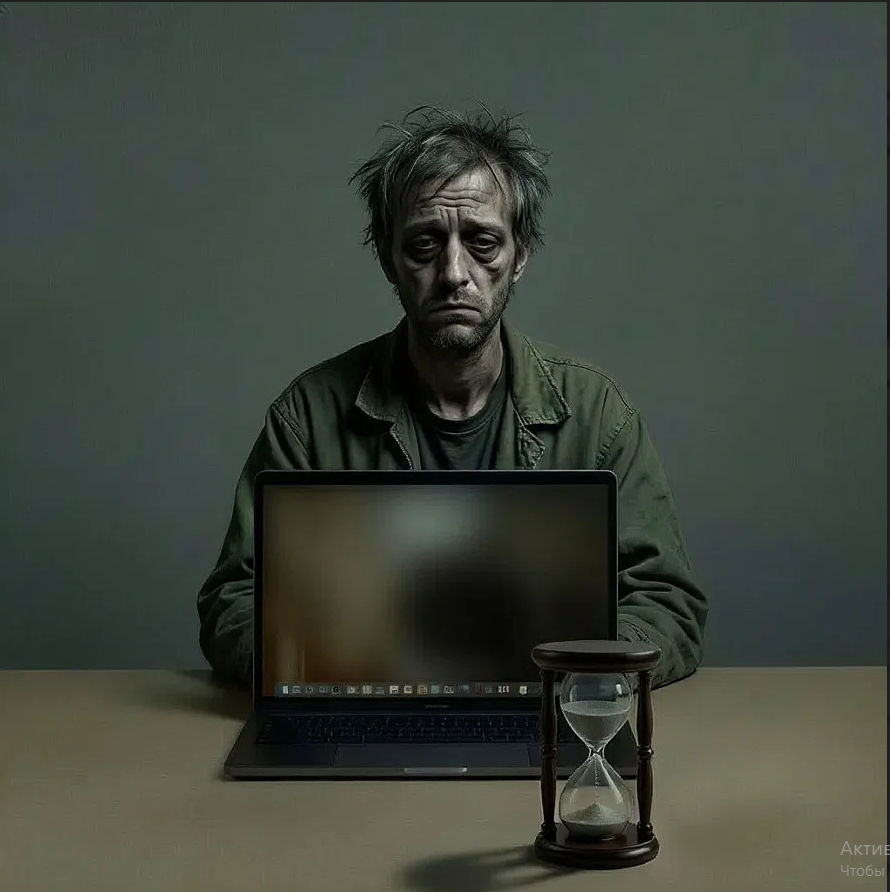

-
Фритрек и нулевой спринт: Подготовка к работе
<Старт>
Это было самое начало пути. На этом этапе важно было проникнуться основами и настроиться на учёбу. И, возможно, подумать, как новые знания могут повлиять на ваше будущее.
С HTML и CSS я познакомился ещё до курса. Показалось, что делать сайты совсем не сложно. Специальность заинтересовала: у неё есть свои плюсы, а IT-сфера даёт возможности, которых не найти в других профессиях. Решил, что стоит освоить.
-
1 спринт: Я — чистый лист
<Уверен>
На первых этапах мы работали со страхами и сомнениями, которые часто испытывают новички. Один из них — страх перед чистым листом. Это, конечно же, намного сложнее, чем боязнь куска бумаги. Часто за этим ощущением скрываются более глубокие вопросы: с чего начать? а вдруг будет слишком сложно? что, если я не справлюсь?
По началу казалось не тяжело, так как я уже примерно представлял, что это такое. Первая работа далась легко, я справился без сомнений. Чувствовал себя чистым листом, готовым впитывать новое.
-
1 спринт: А если не получится?
<План>
Первый проект — позади! Но это всё ещё самое начало пути. Радость могла быстро померкнуть и смениться ожиданием провала. Или вы, наоборот, могли вдохновиться успехами и поверить в себя.
Не скажу, что после сдачи первой работы я испытал бурю эмоций. Примерно так всё и представлял. Какого-то страха «а если не получится?» не было, просто шёл дальше по намеченному плану.
-
2 спринт: Погоня за идеалом
<Качели>На этом этапе вы уже достаточно разбирались в основах вёрстки, чтобы понять, как много ещё впереди. Вы могли попытаться погнаться за идеалом и понять, что он недостижим. А, может, вы вовсе и не подвержены перфекционизму и вместо того, чтобы сделать идеально, старались просто сделать.
А вот на второй работе я начал понимать, куда попал по-настоящему. Оказалось, моё первоначальное представление было обманчивым. Помню те самые «качели», о которых упоминается на курсе — от эйфории до отчаяния.
-
2 спринт: О тех, кто рядом
<Рядом>
Всё это время вы были не одиноки (хотя, возможно, иногда и чувствовали, что одни против целого мира). Вас окружали одногруппники, команда сопровождения и просто близкие люди, которым можно пожаловаться, если очередной макет просто так не поддавался. Осваивать что-то новое легче, когда рядом есть единомышленники, не правда ли?
Да, я по-прежнему сижу на этих качелях. С работой справился, но понимаю: чем дальше, тем круче будет. И в такие моменты особенно важно, что рядом есть те, кто поддержит и направит.
-
3 спринт: Обходные стратегии
<Баланс>
На этом курсе вы постоянно решали разные задачи. В какой-то момент вам могло показаться, что решения просто иссякли. Значит, пришло время посмотреть на задачу под другим углом.
Скажу снова: так всё и продолжается. Совмещать работу и учёбу — тяжело. После каждого спринта ловишь себя на мысли, что начинаешь считать, сколько ещё осталось. Ищешь свои обходные стратегии, чтобы всё успеть.
-
3 спринт: Когда опускаются руки
<Борьба>
Во время учёбы часто возникает чувство, когда не знаешь, за что хвататься. Вроде и проектную пора сдавать, и задачи хочется порешать, и в теории получше разобраться, и жизнь не забыть пожить. В такие моменты очень нужна концентрация. Вспомните, откуда вы её черпали.
Да, времени ни на что не хватает. В какой-то момент реально думаешь: «Я не справлюсь, я не успею, ну и чёрт с ним». Но стоит начать бороться — и когда что-то получается, уже не хочется бросать. Понимаешь, что надо идти до конца.
-
«Сейчас я здесь»
<Путь>Сейчас вы уже очень много знаете о вёрстке. Но это только начало. Во-первых, впереди ещё много материала про «красотищу». Во-вторых, с окончанием курса учёба не заканчивается. Вёрстка — это целый мир. И этот мир постоянно меняется. Познать его полностью не получится, но это тот случай, когда важен сам процесс познания. Ведь часто путь — и есть результат.
Да, я уже понял, что впереди ещё очень много всего. Этот мир необъятен. Буду стараться понять его, надеюсь, у меня получится, и я смогу. Ведь путь — это и есть результат.